Start Giotto
# Ensure Giotto Suite is installed.
if(!"Giotto" %in% installed.packages()) {
pak::pkg_install("drieslab/Giotto")
}
# Ensure GiottoData, a small, helper module for tutorials, is installed.
if(!"GiottoData" %in% installed.packages()) {
pak::pkg_install("drieslab/GiottoData")
}
# Ensure the Python environment for Giotto has been installed.
genv_exists = Giotto::checkGiottoEnvironment()
if(!genv_exists){
# The following command need only be run once to install the Giotto environment.
Giotto::installGiottoEnvironment()
}1. Load the Giotto object
A small seqFISH data is available through the giottoData package.
# download data
seqfish_mini = loadGiottoMini("seqfish",
python_path = NULL)Set Giotto instructions (optional)
How to work with Giotto instructions that are part of your Giotto object:
- Show the instructions associated with your Giotto object with showGiottoInstructions()
- Change one or more instructions with changeGiottoInstructions()
- Replace all instructions at once with replaceGiottoInstructions()
- Read or get a specific Giotto instruction with readGiottoInstructions()
# show instructions associated with giotto object (seqfish_mini)
showGiottoInstructions(seqfish_mini)
# Change one or more instructions
# to automatically save figures in save_dir, set save_plot to TRUE
temp_dir = getwd()
seqfish_mini = changeGiottoInstructions(seqfish_mini,
params = c("save_dir", "save_plot", "show_plot"),
new_values = c(temp_dir,TRUE, TRUE))2. Processing steps
- Filter genes and cells based on detection frequencies.
- Normalize expression matrix (log transformation, scaling factor and/or z-scores)
- Add cell and gene statistics (optional)
- Adjust expression matrix for technical covariates or batches (optional). These results will be stored in the custom slot.
seqfish_mini = filterGiotto(gobject = seqfish_mini,
expression_threshold = 0.5,
feat_det_in_min_cells = 20,
min_det_feats_per_cell = 0)
seqfish_mini = normalizeGiotto(gobject = seqfish_mini,
scalefactor = 6000,
verbose = T)
seqfish_mini = addStatistics(gobject = seqfish_mini)
seqfish_mini = adjustGiottoMatrix(gobject = seqfish_mini,
expression_values = c('normalized'),
covariate_columns = c('nr_feats',
'total_expr'))3. Dimension reduction
- Identify highly variable features (HVF)
seqfish_mini = calculateHVF(gobject = seqfish_mini)
- Perform PCA
- Identify number of significant principal components (PCs)
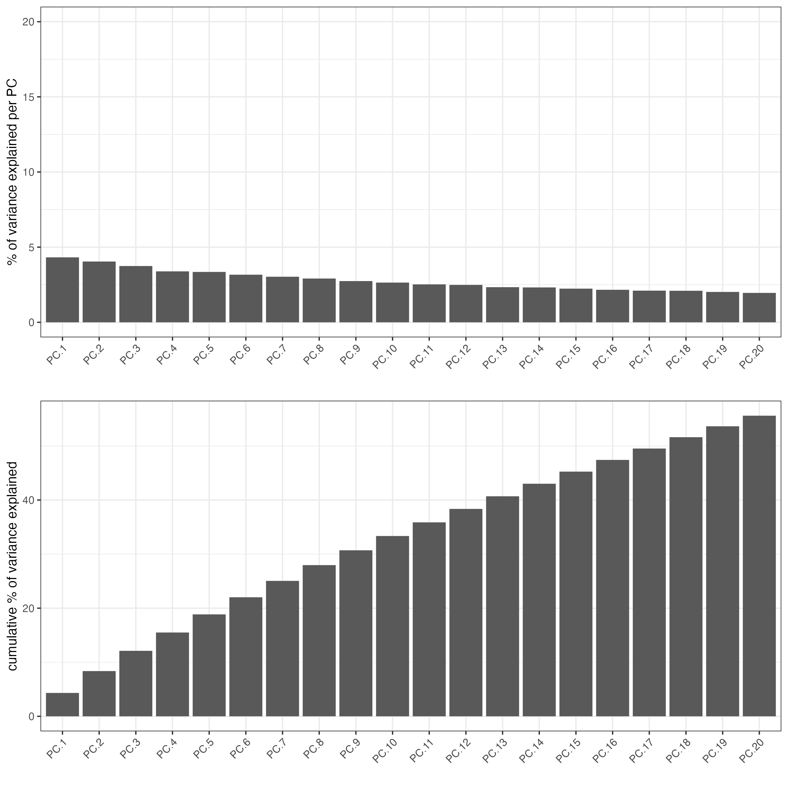
plotPCA(seqfish_mini)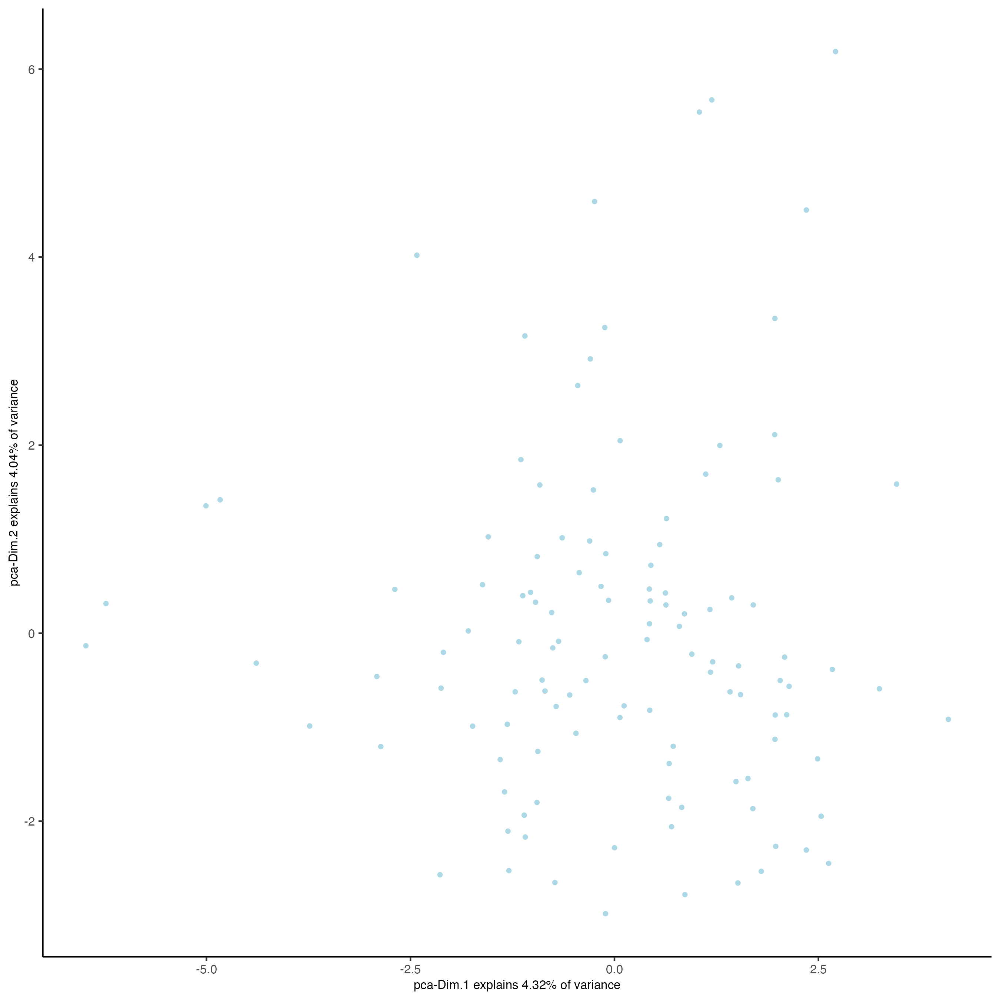
- Run UMAP and/or t-SNE on PCs (or directly on matrix)
seqfish_mini = runUMAP(seqfish_mini,
dimensions_to_use = 1:5,
n_threads = 2)
plotUMAP(gobject = seqfish_mini)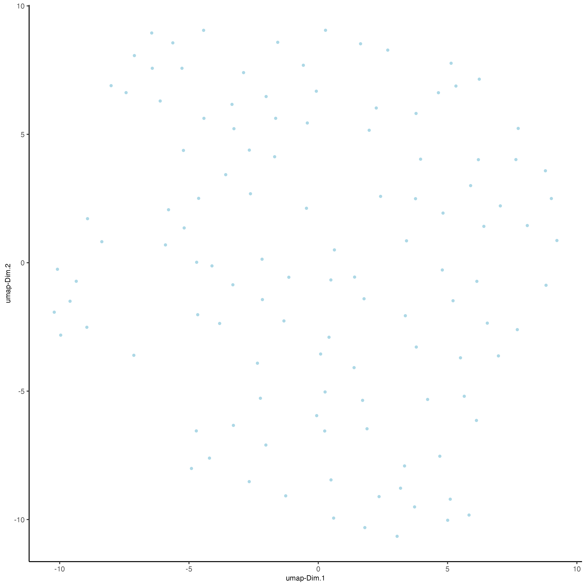
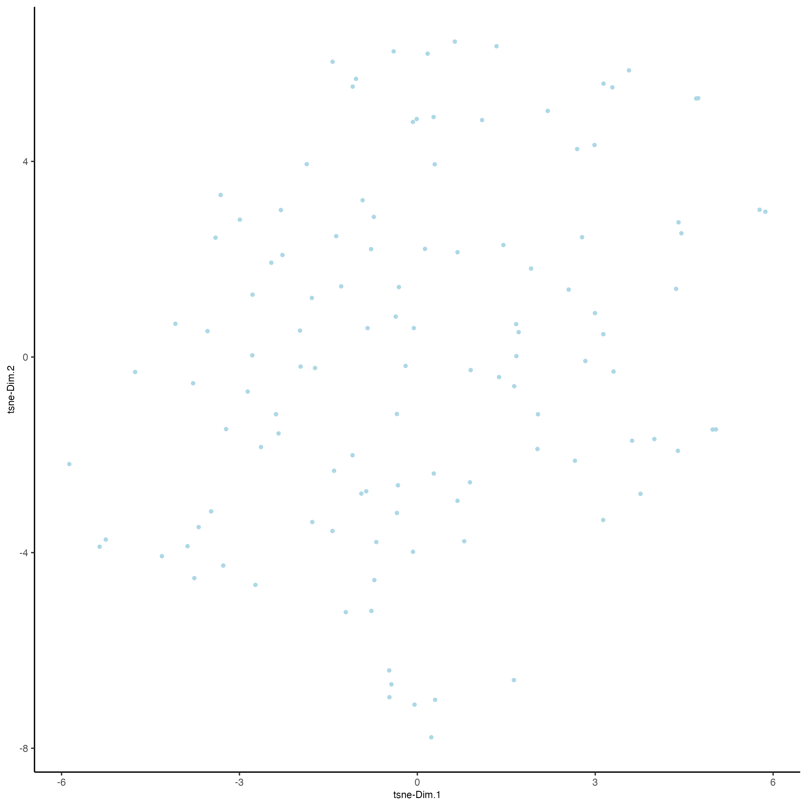
4. Clustering
- Create a shared (default) nearest network in PCA space (or directly on matrix)
- Cluster on nearest network with Leiden or Louvain (k-means and hclust are alternatives)
seqfish_mini = createNearestNetwork(gobject = seqfish_mini,
dimensions_to_use = 1:5,
k = 5)
seqfish_mini = doLeidenCluster(gobject = seqfish_mini,
resolution = 0.4,
n_iterations = 1000)
# visualize UMAP cluster results
plotUMAP(gobject = seqfish_mini,
cell_color = 'leiden_clus',
show_NN_network = T,
point_size = 2.5)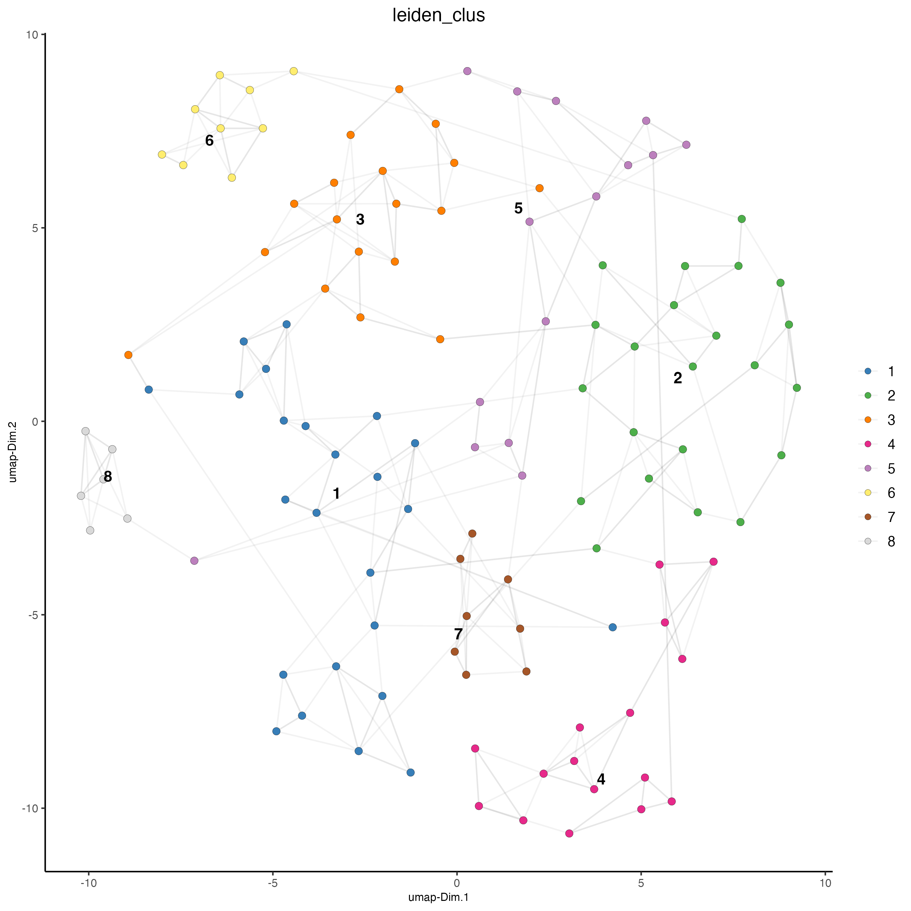
# visualize UMAP and spatial results
spatDimPlot(gobject = seqfish_mini,
cell_color = 'leiden_clus',
spat_point_shape = 'voronoi')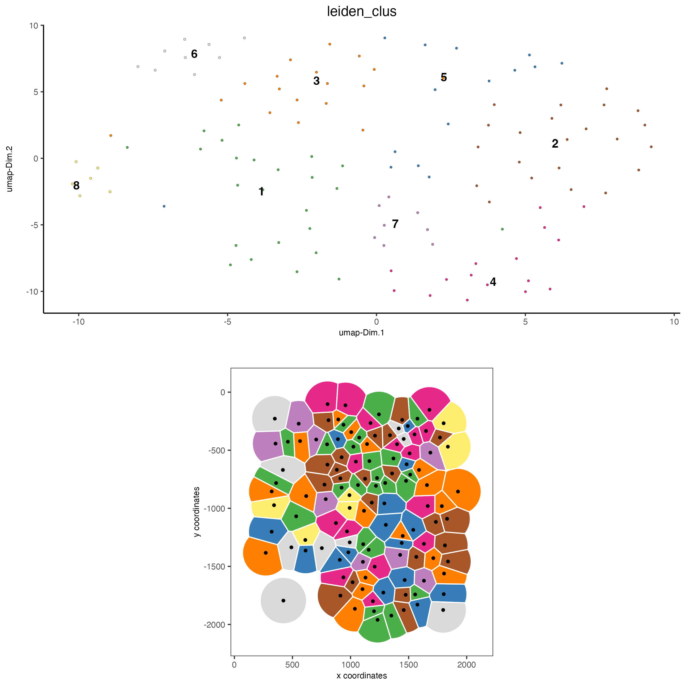
# heatmap and dendrogram
showClusterHeatmap(gobject = seqfish_mini,
cluster_column = 'leiden_clus')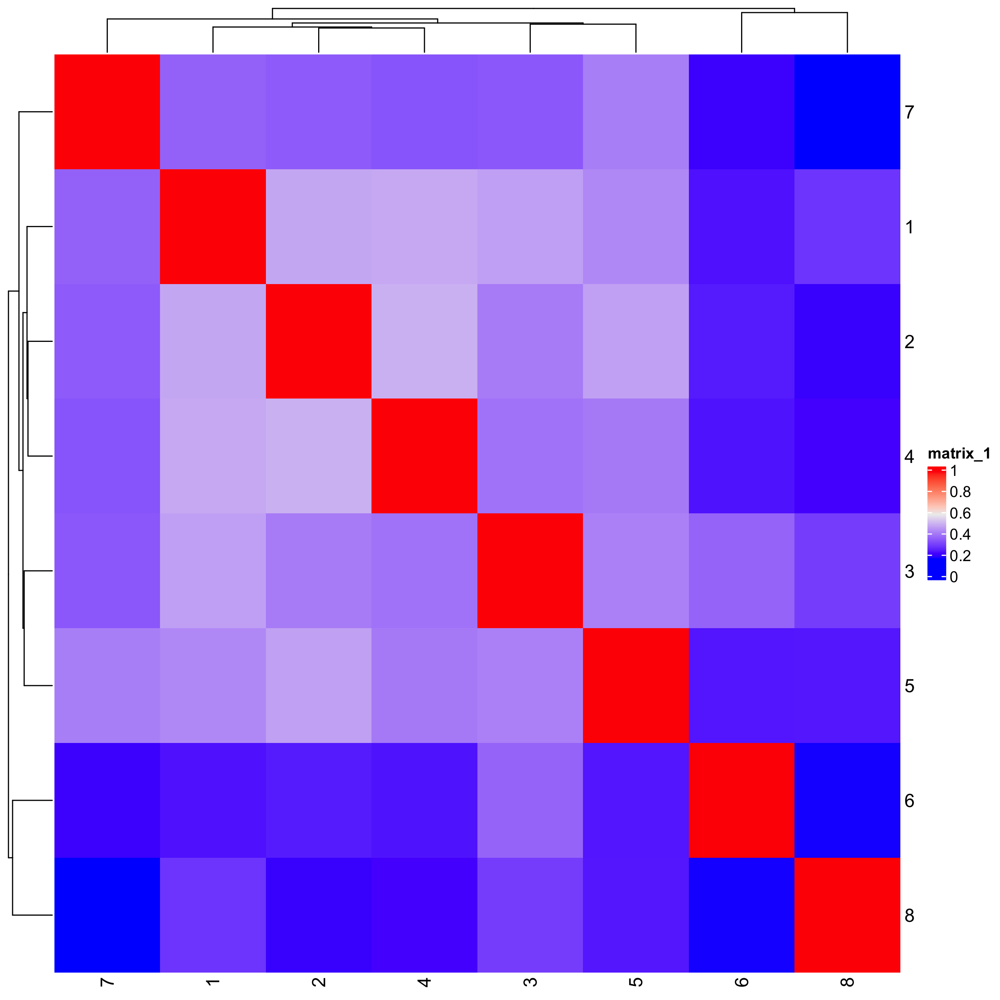
The following step requires the installation of {ggdendro}.
# install.packages('ggdendro')
library(ggdendro)
showClusterDendrogram(seqfish_mini,
h = 0.5,
rotate = T,
cluster_column = 'leiden_clus')
5. Differential expression
gini_markers = findMarkers_one_vs_all(gobject = seqfish_mini,
method = 'gini',
expression_values = 'normalized',
cluster_column = 'leiden_clus',
min_feats = 20,
min_expr_gini_score = 0.5,
min_det_gini_score = 0.5)
# get top 2 genes per cluster and visualize with violin plot
topgenes_gini = gini_markers[, head(.SD, 2), by = 'cluster']
violinPlot(seqfish_mini,
feats = topgenes_gini$feats[1:4],
cluster_column = 'leiden_clus')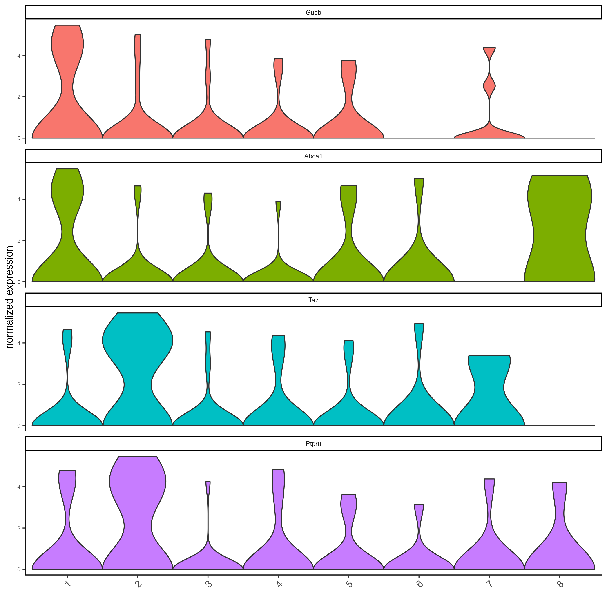
# get top 6 genes per cluster and visualize with heatmap
topgenes_gini2 = gini_markers[, head(.SD, 6), by = 'cluster']
plotMetaDataHeatmap(seqfish_mini,
selected_feats = topgenes_gini2$feats,
metadata_cols = c('leiden_clus'))
6. Cell type annotation
clusters_cell_types = c('cell A', 'cell B', 'cell C', 'cell D',
'cell E', 'cell F', 'cell G', 'cell H')
names(clusters_cell_types) = 1:8
seqfish_mini = annotateGiotto(gobject = seqfish_mini,
annotation_vector = clusters_cell_types,
cluster_column = 'leiden_clus',
name = 'cell_types')
# check new cell metadata
pDataDT(seqfish_mini)
# visualize annotations
spatDimPlot(gobject = seqfish_mini,
cell_color = 'cell_types',
spat_point_size = 3,
dim_point_size = 3)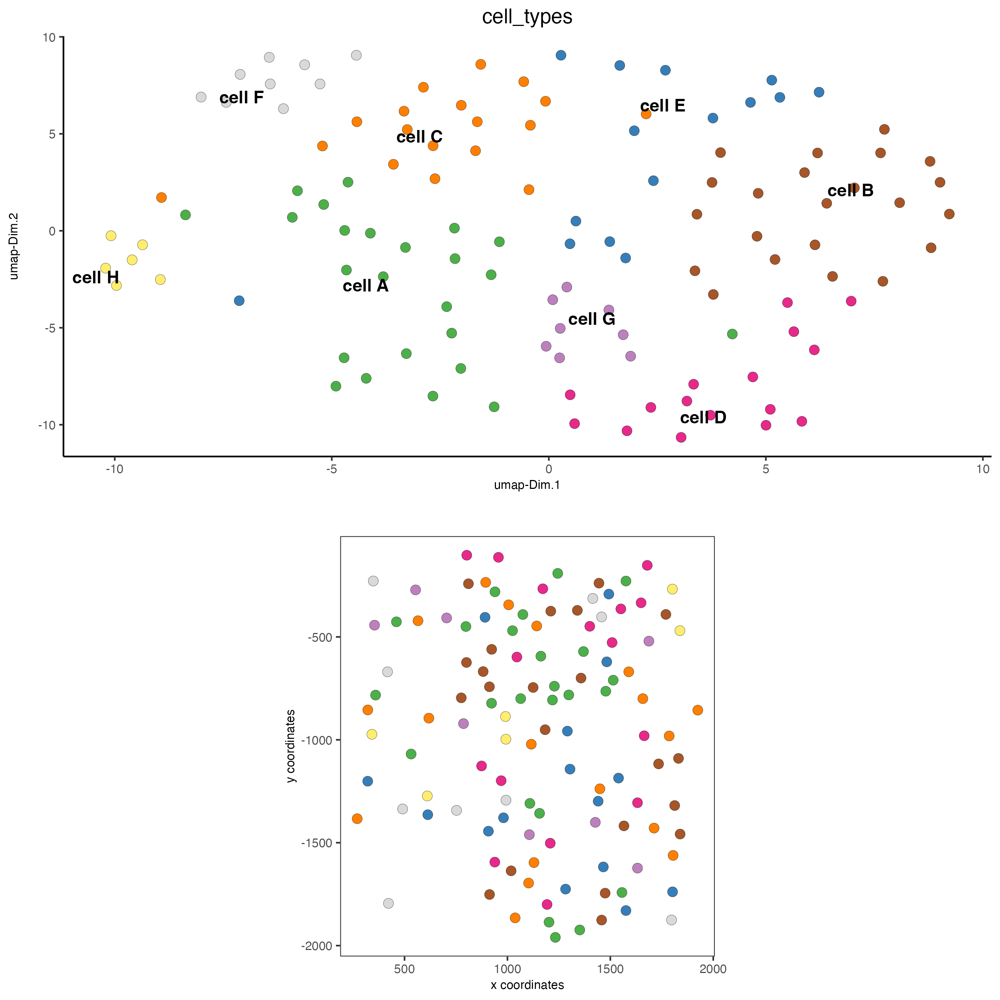
# heatmap
topgenes_heatmap = gini_markers[, head(.SD, 4), by = 'cluster']
plotHeatmap(gobject = seqfish_mini,
feats = topgenes_heatmap$feats,
feat_order = 'custom',
feat_custom_order = unique(topgenes_heatmap$feats),
cluster_column = 'cell_types',
legend_nrows = 1)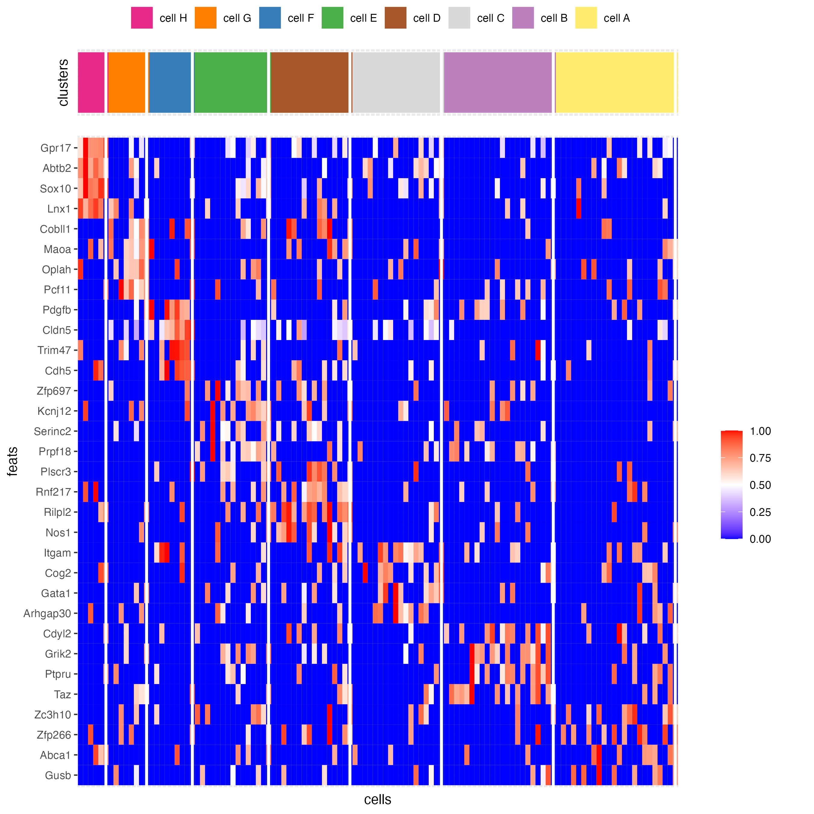
7. Spatial grid
- Create a grid based on defined step sizes in the x,y(,z) axes.
seqfish_mini = createSpatialGrid(gobject = seqfish_mini,
sdimx_stepsize = 300,
sdimy_stepsize = 300,
minimum_padding = 50)
showGiottoSpatGrids(seqfish_mini)
# visualize grid
spatPlot(gobject = seqfish_mini,
show_grid = T,
point_size = 1.5)
8. Spatial network
- Visualize information about the default Delaunay network
- Create a spatial Delaunay network (default)
- Create a spatial kNN network
plotStatDelaunayNetwork(gobject = seqfish_mini,
maximum_distance = 400)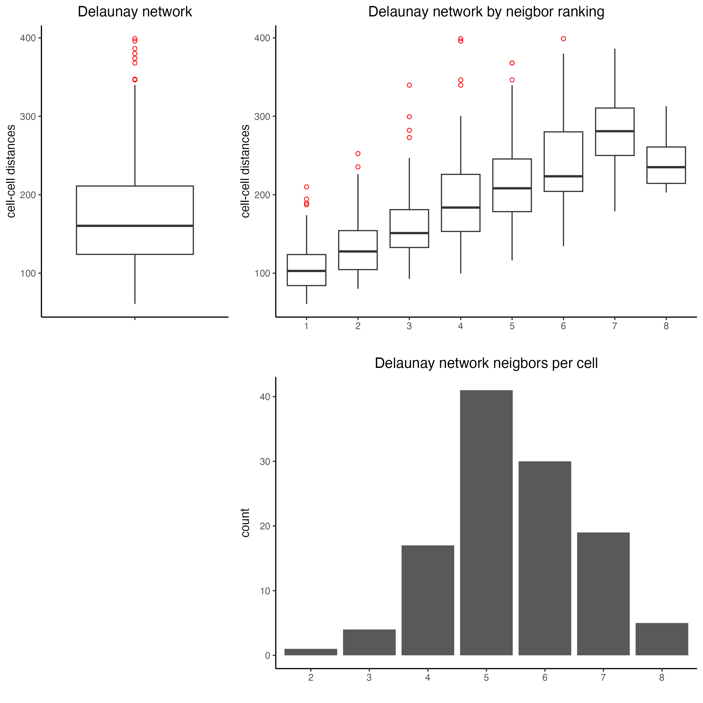
seqfish_mini = createSpatialNetwork(gobject = seqfish_mini,
minimum_k = 2,
maximum_distance_delaunay = 400)
seqfish_mini = createSpatialNetwork(gobject = seqfish_mini,
minimum_k = 2,
method = 'kNN', k = 10)
showGiottoSpatNetworks(seqfish_mini)
# visualize the two different spatial networks
spatPlot(gobject = seqfish_mini,
show_network = T,
network_color = 'blue',
spatial_network_name = 'Delaunay_network',
point_size = 2.5,
cell_color = 'leiden_clus')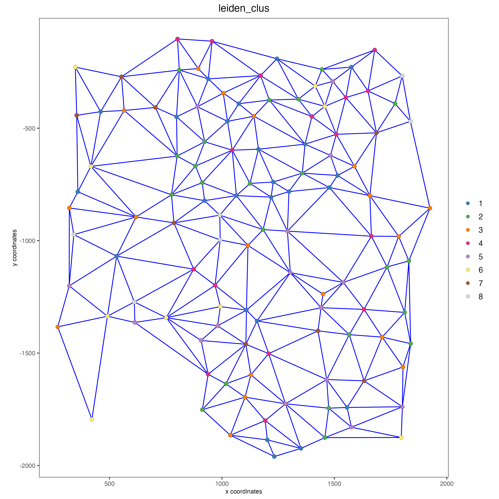
spatPlot(gobject = seqfish_mini,
show_network = T,
network_color = 'blue',
spatial_network_name = 'kNN_network',
point_size = 2.5,
cell_color = 'leiden_clus')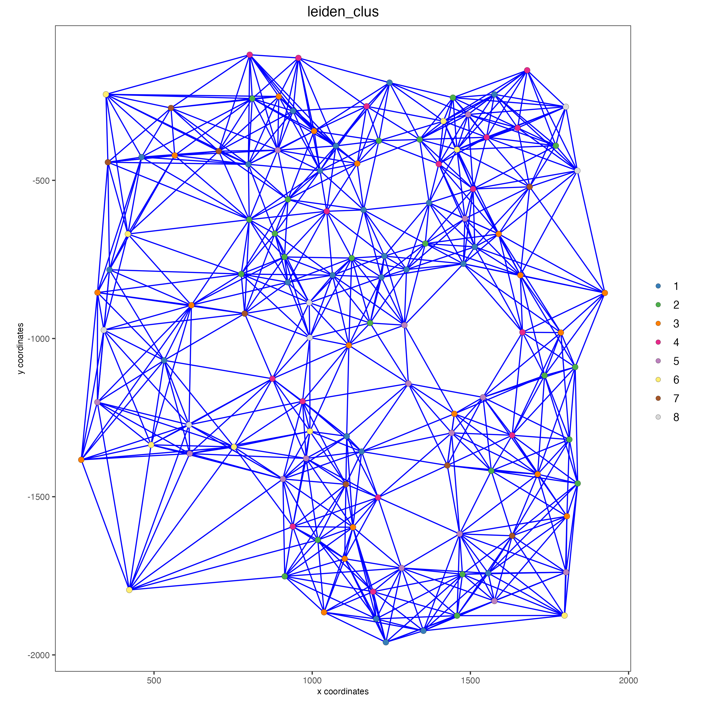
9. Spatial genes
Identify spatial genes with 3 different methods:
- binSpect with k-means binarization (default)
- binSpect with rank binarization
- silhouetteRank
Visualize top 4 genes per method.
km_spatialgenes = binSpect(seqfish_mini)
spatFeatPlot2D(seqfish_mini,
expression_values = 'scaled',
feats = km_spatialgenes[1:4]$feats,
point_shape = 'border',
point_border_stroke = 0.1,
show_network = F,
network_color = 'lightgrey',
point_size = 2.5,
cow_n_col = 2)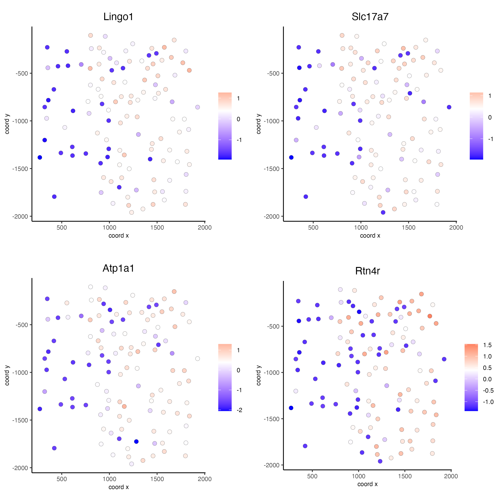
rank_spatialgenes = binSpect(seqfish_mini,
bin_method = 'rank')
spatFeatPlot2D(seqfish_mini,
expression_values = 'scaled',
feats = rank_spatialgenes[1:4]$feats,
point_shape = 'border',
point_border_stroke = 0.1,
show_network = F,
network_color = 'lightgrey',
point_size = 2.5,
cow_n_col = 2)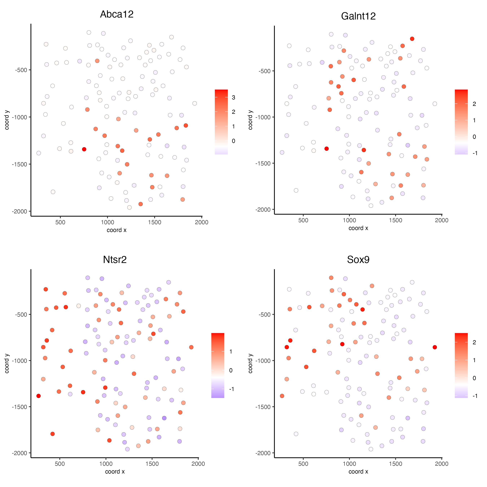
silh_spatialgenes = silhouetteRank(gobject = seqfish_mini) # TODO: suppress print output
spatFeatPlot2D(seqfish_mini,
expression_values = 'scaled',
feats = silh_spatialgenes[1:4]$genes,
point_shape = 'border',
point_border_stroke = 0.1,
show_network = F,
network_color = 'lightgrey',
point_size = 2.5,
cow_n_col = 2)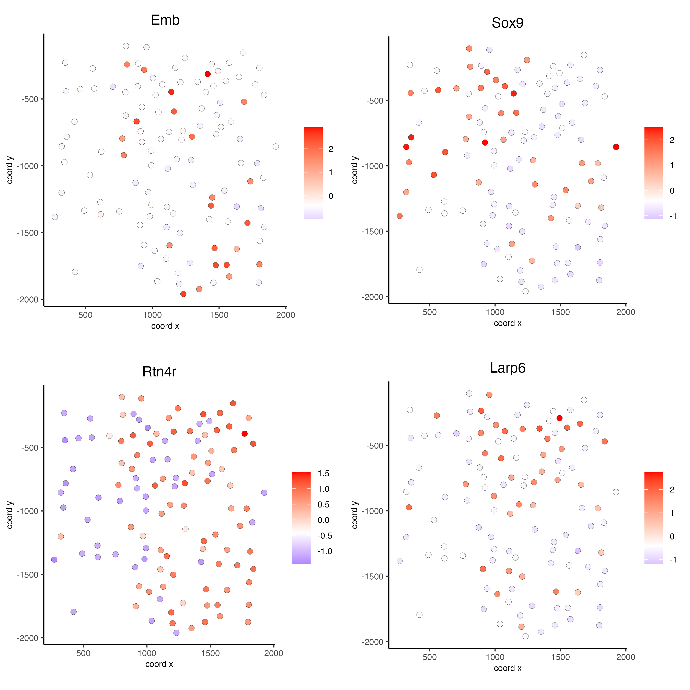
10. Spatial co-expression patterns
Identify robust spatial co-expression patterns using the spatial network or grid and a subset of individual spatial genes.
- Calculate spatial correlation scores
- Cluster correlation scores
# 1. calculate spatial correlation scores
ext_spatial_genes = km_spatialgenes[1:500]$feats
spat_cor_netw_DT = detectSpatialCorFeats(seqfish_mini,
method = 'network',
spatial_network_name = 'Delaunay_network',
subset_feats = ext_spatial_genes)
# 2. cluster correlation scores
spat_cor_netw_DT = clusterSpatialCorFeats(spat_cor_netw_DT,
name = 'spat_netw_clus',
k = 8)
heatmSpatialCorFeats(seqfish_mini,
spatCorObject = spat_cor_netw_DT,
use_clus_name = 'spat_netw_clus')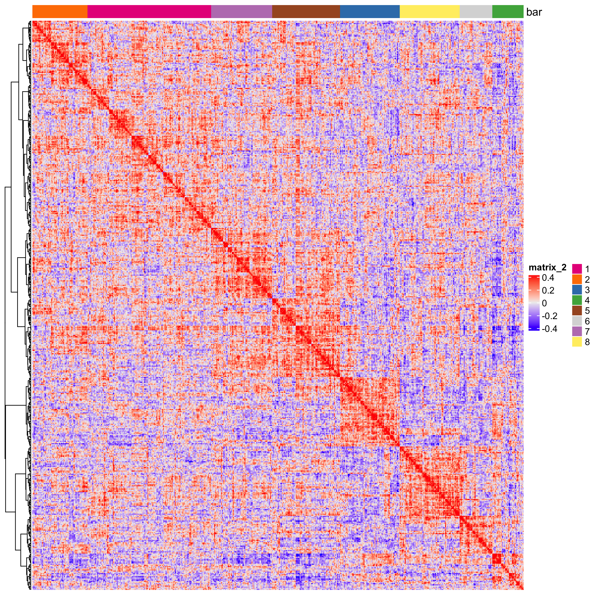
netw_ranks = rankSpatialCorGroups(seqfish_mini,
spatCorObject = spat_cor_netw_DT,
use_clus_name = 'spat_netw_clus')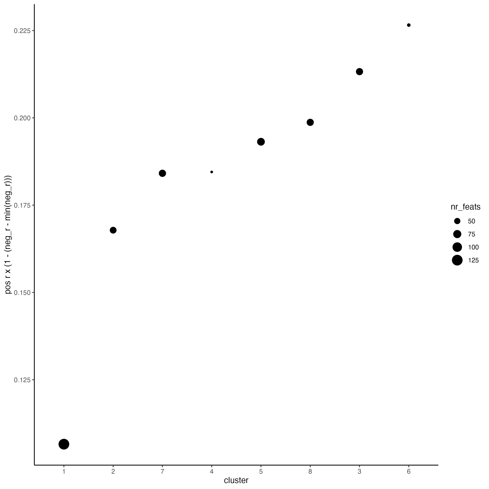
top_netw_spat_cluster = showSpatialCorFeats(spat_cor_netw_DT,
use_clus_name = 'spat_netw_clus',
selected_clusters = 6,
show_top_feats = 1)
cluster_genes_DT = showSpatialCorFeats(spat_cor_netw_DT,
use_clus_name = 'spat_netw_clus',
show_top_feats = 1)
cluster_genes = cluster_genes_DT$clus; names(cluster_genes) = cluster_genes_DT$feat_ID
seqfish_mini = createMetafeats(seqfish_mini,
feat_clusters = cluster_genes,
name = 'cluster_metagene')
spatCellPlot(seqfish_mini,
spat_enr_names = 'cluster_metagene',
cell_annotation_values = netw_ranks$clusters,
point_size = 1.5, cow_n_col = 3)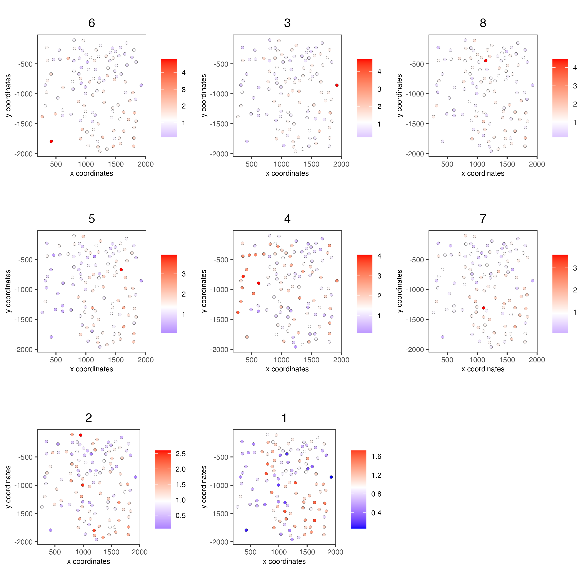
11. Spatial HMRF domains
The following HMRF function requires {smfishHmrf} .
# remotes::install_bitbucket(repo = 'qzhudfci/smfishhmrf-r', ref='master')
library(smfishHmrf)
hmrf_folder = paste0(temp_dir,'/','11_HMRF/')
if(!file.exists(hmrf_folder)) dir.create(hmrf_folder, recursive = T)
# perform hmrf
my_spatial_genes = km_spatialgenes[1:100]$feats
HMRF_spatial_genes = doHMRF(gobject = seqfish_mini,
expression_values = 'scaled',
spatial_genes = my_spatial_genes,
spatial_network_name = 'Delaunay_network',
k = 9,
betas = c(28,2,2),
output_folder = paste0(hmrf_folder, '/', 'Spatial_genes/SG_top100_k9_scaled'))
# check and select hmrf
for(i in seq(28, 30, by = 2)) {
viewHMRFresults2D(gobject = seqfish_mini,
HMRFoutput = HMRF_spatial_genes,
k = 9, betas_to_view = i,
point_size = 2)
}
seqfish_mini = addHMRF(gobject = seqfish_mini,
HMRFoutput = HMRF_spatial_genes,
k = 9, betas_to_add = c(28),
hmrf_name = 'HMRF')
# visualize selected hmrf result
giotto_colors = Giotto::getDistinctColors(9)
names(giotto_colors) = 1:9
spatPlot(gobject = seqfish_mini,
cell_color = 'HMRF_k9_b.28',
point_size = 3,
coord_fix_ratio = 1,
cell_color_code = giotto_colors)
12. Cell neighborhood: cell-type/cell-type interactions
set.seed(seed = 2841)
cell_proximities = cellProximityEnrichment(gobject = seqfish_mini,
cluster_column = 'cell_types',
spatial_network_name = 'Delaunay_network',
adjust_method = 'fdr',
number_of_simulations = 1000)
# barplot
cellProximityBarplot(gobject = seqfish_mini,
CPscore = cell_proximities,
min_orig_ints = 5,
min_sim_ints = 5,
p_val = 0.5)
## heatmap
cellProximityHeatmap(gobject = seqfish_mini,
CPscore = cell_proximities,
order_cell_types = T,
scale = T,
color_breaks = c(-1.5, 0, 1.5),
color_names = c('blue', 'white', 'red'))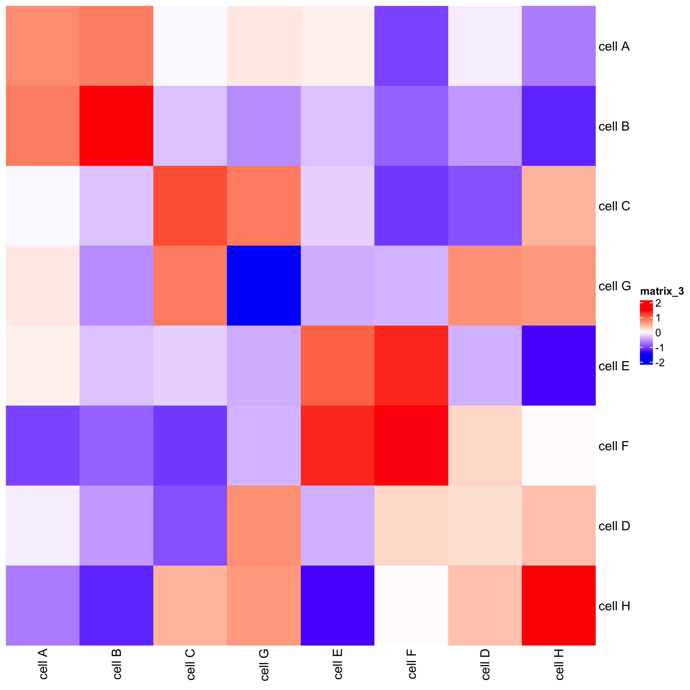
# network
cellProximityNetwork(gobject = seqfish_mini,
CPscore = cell_proximities,
remove_self_edges = T,
only_show_enrichment_edges = T)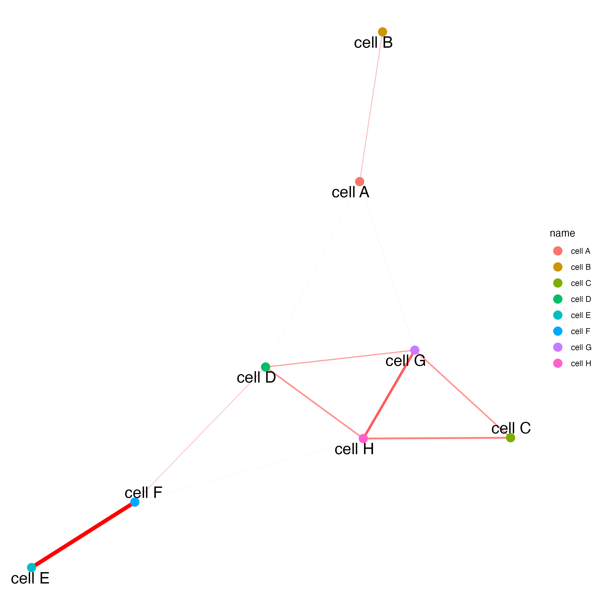
# network with self-edges
cellProximityNetwork(gobject = seqfish_mini,
CPscore = cell_proximities,
remove_self_edges = F,
self_loop_strength = 0.3,
only_show_enrichment_edges = F,
rescale_edge_weights = T,
node_size = 8,
edge_weight_range_depletion = c(1, 2),
edge_weight_range_enrichment = c(2,5))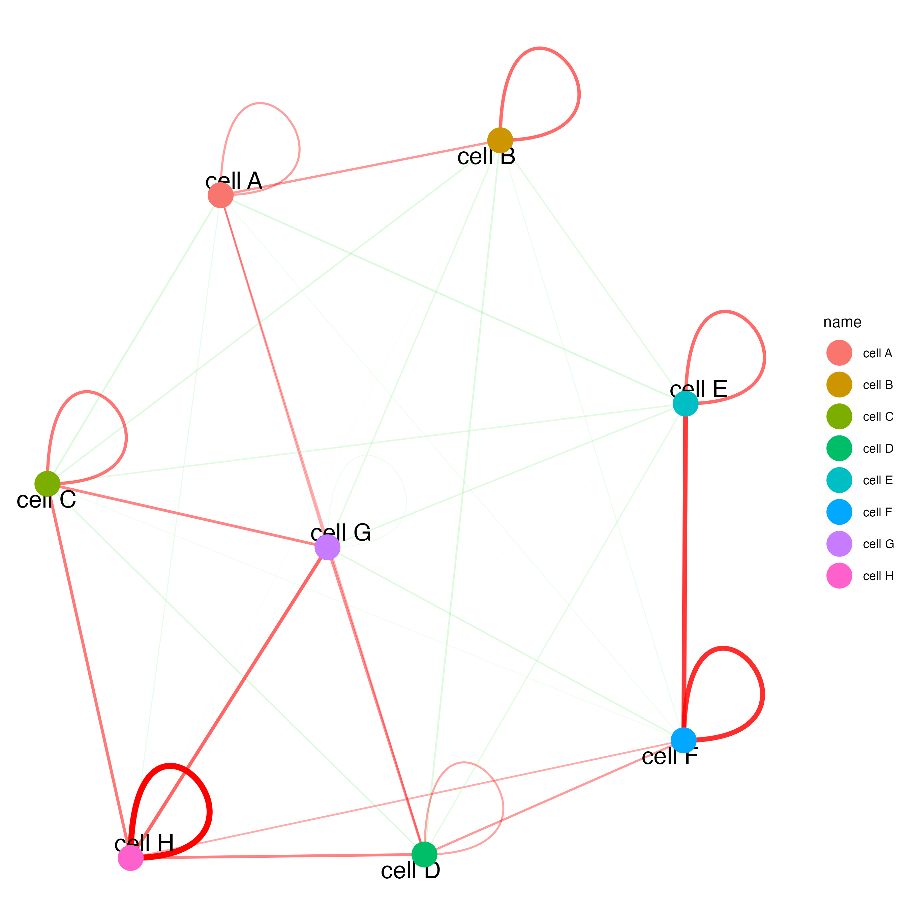
Visualization of specific cell types
# Option 1
spec_interaction = "cell D--cell F"
cellProximitySpatPlot2D(gobject = seqfish_mini,
interaction_name = spec_interaction,
show_network = T,
cluster_column = 'cell_types',
cell_color = 'cell_types',
cell_color_code = c('cell D' = 'lightblue', 'cell F' = 'red'),
point_size_select = 4,
point_size_other = 2)
# Option 2: create additional metadata
seqfish_mini = addCellIntMetadata(seqfish_mini,
spat_unit = "cell",
spatial_network = 'Delaunay_network',
cluster_column = 'cell_types',
cell_interaction = spec_interaction,
name = 'D_F_interactions')
spatPlot(seqfish_mini,
cell_color = 'D_F_interactions',
legend_symbol_size = 3,
select_cell_groups = c('other_cell D', 'other_cell F', 'select_cell D', 'select_cell F'))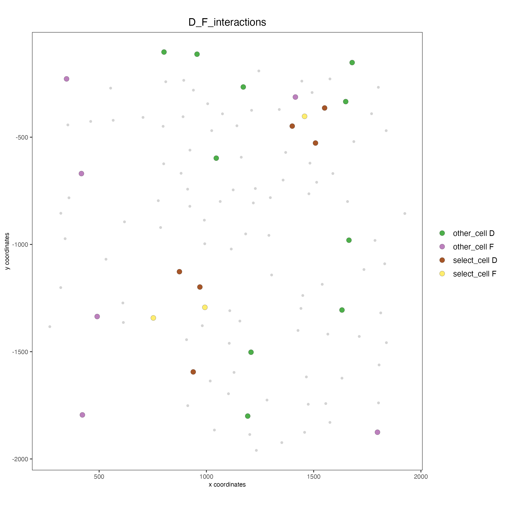
13. Cell neighborhood: interaction changed features
## select top 25 highest expressing genes
gene_metadata = fDataDT(seqfish_mini)
plot(gene_metadata$nr_cells, gene_metadata$mean_expr)
plot(gene_metadata$nr_cells, gene_metadata$mean_expr_det)
quantile(gene_metadata$mean_expr_det)
high_expressed_genes = gene_metadata[mean_expr_det > 4]$feat_ID
## identify features (genes) that are associated with proximity to other cell types
ICFscoresHighGenes = findICF(gobject = seqfish_mini,
selected_feats = high_expressed_genes,
spatial_network_name = 'Delaunay_network',
cluster_column = 'cell_types',
diff_test = 'permutation',
adjust_method = 'fdr',
nr_permutations = 500,
do_parallel = T)
## visualize all genes
plotCellProximityFeats(seqfish_mini,
icfObject = ICFscoresHighGenes,
method = 'dotplot')
## filter genes
ICFscoresFilt = filterICF(ICFscoresHighGenes,
min_cells = 2,
min_int_cells = 2,
min_fdr = 0.1,
min_spat_diff = 0.1,
min_log2_fc = 0.1,
min_zscore = 1)
## visualize subset of interaction changed genes (ICGs)
ICF_genes = c('Cpne2', 'Scg3', 'Cmtm3', 'Cplx1', 'Lingo1')
ICF_genes_types = c('cell E', 'cell D', 'cell D', 'cell G', 'cell E')
names(ICF_genes) = ICF_genes_types
plotICF(gobject = seqfish_mini,
icfObject = ICFscoresHighGenes,
source_type = 'cell A',
source_markers = c('Csf1r', 'Laptm5'),
ICF_feats = ICF_genes)
14. Cell neighborhood: ligand-receptor cell-cell communication
LR_data = data.table::fread(system.file("Mini_datasets/seqfish/Raw/mouse_ligand_receptors.txt",
package = "GiottoData"))
LR_data[, ligand_det := ifelse(mouseLigand %in% seqfish_mini@feat_ID[['rna']], T, F)]
LR_data[, receptor_det := ifelse(mouseReceptor %in% seqfish_mini@feat_ID[['rna']], T, F)]
LR_data_det = LR_data[ligand_det == T & receptor_det == T]
select_ligands = LR_data_det$mouseLigand
select_receptors = LR_data_det$mouseReceptor
## get statistical significance of gene pair expression changes based on expression ##
expr_only_scores = exprCellCellcom(gobject = seqfish_mini,
cluster_column = 'cell_types',
random_iter = 50,
feat_set_1 = select_ligands,
feat_set_2 = select_receptors)
## get statistical significance of gene pair expression changes upon cell-cell interaction
spatial_all_scores = spatCellCellcom(seqfish_mini,
spat_unit = 'cell',
feat_type = 'rna',
spatial_network_name = 'Delaunay_network',
cluster_column = 'cell_types',
random_iter = 50,
feat_set_1 = select_ligands,
feat_set_2 = select_receptors,
adjust_method = 'fdr',
do_parallel = T,
cores = 4,
verbose = 'none')
## * plot communication scores ####
## select top LR ##
selected_spat = spatial_all_scores[p.adj <= 0.5 & abs(log2fc) > 0.1 & lig_nr >= 2 & rec_nr >= 2]
data.table::setorder(selected_spat, -PI)
top_LR_ints = unique(selected_spat[order(-abs(PI))]$LR_comb)[1:33]
top_LR_cell_ints = unique(selected_spat[order(-abs(PI))]$LR_cell_comb)[1:33]
plotCCcomHeatmap(gobject = seqfish_mini,
comScores = spatial_all_scores,
selected_LR = top_LR_ints,
selected_cell_LR = top_LR_cell_ints,
show = 'LR_expr')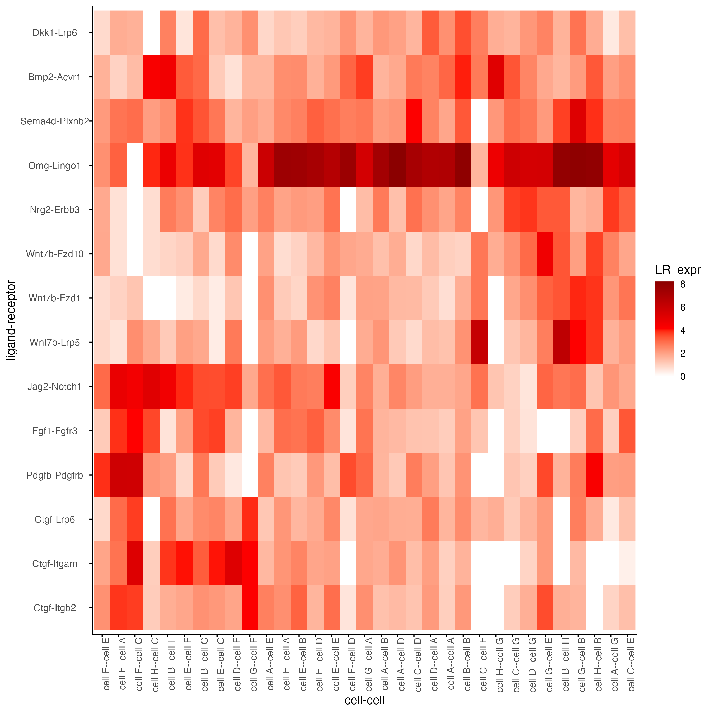
plotCCcomDotplot(gobject = seqfish_mini,
comScores = spatial_all_scores,
selected_LR = top_LR_ints,
selected_cell_LR = top_LR_cell_ints,
cluster_on = 'PI')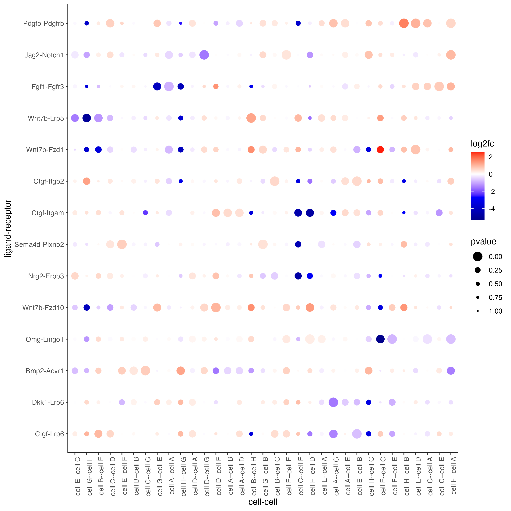
## * spatial vs rank ####
comb_comm = combCCcom(spatialCC = spatial_all_scores,
exprCC = expr_only_scores)
# top differential activity levels for ligand receptor pairs
plotRankSpatvsExpr(gobject = seqfish_mini,
comb_comm,
expr_rnk_column = 'exprPI_rnk',
spat_rnk_column = 'spatPI_rnk',
gradient_midpoint = 10)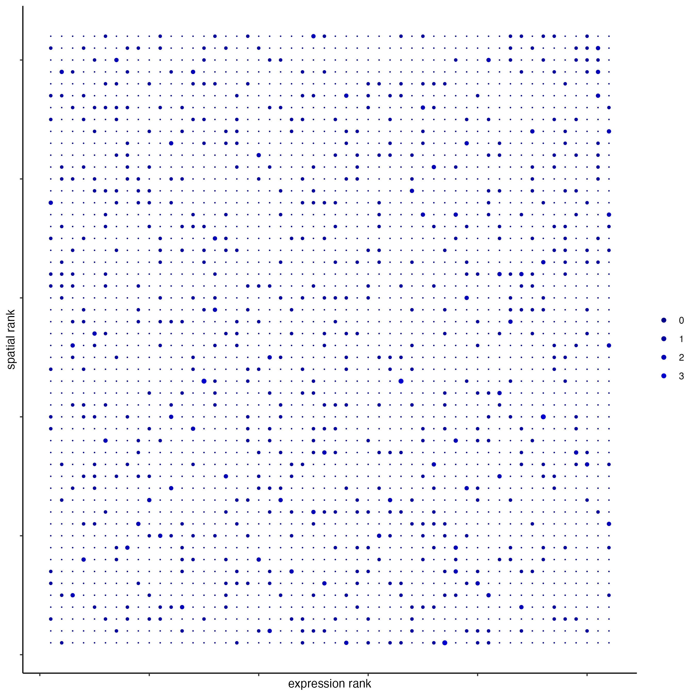
## * recovery ####
## predict maximum differential activity
plotRecovery(gobject = seqfish_mini,
comb_comm,
expr_rnk_column = 'exprPI_rnk',
spat_rnk_column = 'spatPI_rnk',
ground_truth = 'spatial')
15. Session info
R version 4.3.2 (2023-10-31)
Platform: x86_64-apple-darwin20 (64-bit)
Running under: macOS Sonoma 14.3
Matrix products: default
BLAS: /System/Library/Frameworks/Accelerate.framework/Versions/A/Frameworks/vecLib.framework/Versions/A/libBLAS.dylib
LAPACK: /Library/Frameworks/R.framework/Versions/4.3-x86_64/Resources/lib/libRlapack.dylib; LAPACK version 3.11.0
locale:
[1] en_US.UTF-8/en_US.UTF-8/en_US.UTF-8/C/en_US.UTF-8/en_US.UTF-8
time zone: America/New_York
tzcode source: internal
attached base packages:
[1] stats graphics grDevices utils datasets methods base
other attached packages:
[1] smfishHmrf_0.1 fs_1.6.3 pracma_2.4.4 ggdendro_0.1.23
[5] GiottoData_0.2.6.2 GiottoUtils_0.1.3 Giotto_4.0.2 GiottoClass_0.1.3
loaded via a namespace (and not attached):
[1] RColorBrewer_1.1-3 rstudioapi_0.15.0 jsonlite_1.8.8
[4] shape_1.4.6 magrittr_2.0.3 magick_2.8.2
[7] farver_2.1.1 GlobalOptions_0.1.2 zlibbioc_1.48.0
[10] ragg_1.2.7 vctrs_0.6.5 Cairo_1.6-2
[13] RCurl_1.98-1.14 terra_1.7-71 S4Arrays_1.2.0
[16] SparseArray_1.2.3 parallelly_1.36.0 plyr_1.8.9
[19] igraph_2.0.1.1 lifecycle_1.0.4 iterators_1.0.14
[22] pkgconfig_2.0.3 rsvd_1.0.5 Matrix_1.6-5
[25] R6_2.5.1 GenomeInfoDbData_1.2.11 rbibutils_2.2.16
[28] MatrixGenerics_1.14.0 future_1.33.1 clue_0.3-65
[31] digest_0.6.34 colorspace_2.1-0 S4Vectors_0.40.2
[34] irlba_2.3.5.1 textshaping_0.3.7 GenomicRanges_1.54.1
[37] beachmat_2.18.0 labeling_0.4.3 progressr_0.14.0
[40] fansi_1.0.6 polyclip_1.10-6 abind_1.4-5
[43] compiler_4.3.2 withr_3.0.0 doParallel_1.0.17
[46] backports_1.4.1 BiocParallel_1.36.0 viridis_0.6.5
[49] ggforce_0.4.1 MASS_7.3-60.0.1 DelayedArray_0.28.0
[52] rjson_0.2.21 gtools_3.9.5 GiottoVisuals_0.1.4
[55] tools_4.3.2 future.apply_1.11.1 glue_1.7.0
[58] dbscan_1.1-12 grid_4.3.2 checkmate_2.3.1
[61] Rtsne_0.17 cluster_2.1.6 reshape2_1.4.4
[64] generics_0.1.3 gtable_0.3.4 tidyr_1.3.1
[67] data.table_1.15.0 BiocSingular_1.18.0 tidygraph_1.3.1
[70] ScaledMatrix_1.10.0 utf8_1.2.4 XVector_0.42.0
[73] BiocGenerics_0.48.1 ggrepel_0.9.5 foreach_1.5.2
[76] pillar_1.9.0 stringr_1.5.1 limma_3.58.1
[79] circlize_0.4.15 dplyr_1.1.4 tweenr_2.0.2
[82] lattice_0.22-5 FNN_1.1.4 deldir_2.0-2
[85] tidyselect_1.2.0 ComplexHeatmap_2.18.0 SingleCellExperiment_1.24.0
[88] knitr_1.45 gridExtra_2.3 IRanges_2.36.0
[91] SummarizedExperiment_1.32.0 stats4_4.3.2 xfun_0.41
[94] graphlayouts_1.1.0 Biobase_2.62.0 statmod_1.5.0
[97] matrixStats_1.2.0 stringi_1.8.3 codetools_0.2-19
[100] ggraph_2.1.0 tibble_3.2.1 colorRamp2_0.1.0
[103] cli_3.6.2 uwot_0.1.16 reticulate_1.35.0
[106] systemfonts_1.0.5 Rdpack_2.6 munsell_0.5.0
[109] Rcpp_1.0.12 GenomeInfoDb_1.38.5 globals_0.16.2
[112] png_0.1-8 parallel_4.3.2 ggplot2_3.4.4
[115] bitops_1.0-7 listenv_0.9.1 SpatialExperiment_1.12.0
[118] viridisLite_0.4.2 scales_1.3.0 purrr_1.0.2
[121] crayon_1.5.2 GetoptLong_1.0.5 rlang_1.1.3
[124] cowplot_1.1.3